SensorViz: Visualizing Sensor Data Across Diferent Stages of Prototyping Interactive Objects
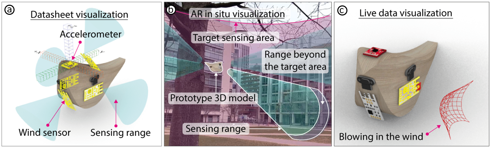
Figure 1: (a) Before buying sensors, makers can visualize sensor data from the datasheet to get a frst idea of what sensors can sense. (b) Before physically building the prototype, makers can visualize sensor data in AR to see what sensors can sense in the context in which the prototype will be used. (c) After assembling the physical prototype, makers can visualize live data either in the 3D editor or via AR to verify that the sensors work as expected and to make further changes as needed.
In this paper, we propose SensorViz, a visualization tool that supports novice makers during diferent stages of prototyping with sensors. SensorViz provides three modes of visualization: (1) visualizing datasheet specifcations before buying sensors, (2) visualizing sensor interaction with the environment via AR before building the physical prototype, and (3) visualizing live/recorded sensor data to test the assembled prototype. SensorViz includes a library of visualization primitives for diferent types of sensor data and a sensor database builder, which once a new sensor is added automatically creates a matching visualization by composing visualization primitives. Our user study with 12 makers shows that users are more efective in selecting sensors and confguring sensor layouts using SensorViz compared to traditional prototyping utilizing datasheets and manual testing on the prototype. Our post hoc interviews indicate that SensorViz reduces trial and error by allowing makers to explore sensor positions on the prototype early in the design process.
INTRODUCTION
Over the past decades, the availability of sensors has increased substantially and enabled makers and designers to prototype interactive objects rapidly and at low cost. However, this large variety of components also comes with the challenge of selecting the right sensor from many similar components to fnd the one that best fts the use case at hand. Since each sensor has its own specifcation, understanding what each sensor can sense and how it will work on a prototype can be a time-consuming process.
In today’s workfow, makers have two options to increase their understanding of how sensors behave. First, makers can consult each sensor’s datasheet. However, extracting information from a datasheet can be cumbersome and confusing since the sensing information may be buried among the chip design, schematic, and other technical aspects. In addition, datasheets are not standardized, which makes comparing sensors with each other a difcult task. Furthermore, since datasheets are text documents, it can be hard to picture what sensors can sense when placed on a prototype.
Alternatively, makers can physically explore what sensors can sense by wiring them up. However, this comes with its own challenges since makers have to buy diferent sensors upfront to test which one works best for their prototype. They have to write code for each sensor before they can start assessing if the sensors are suitable. Further, the sensor data is either represented as printed text in a terminal or as a graph in a plotter tool, and not as spatial information in 3D.
Several tools for prototyping robot and aircraft applications can visualize sensor data in 3D. Gazebo in ROS [27] and SensorFusion [29], for instance, allow users to defne sensors and their 3D position via scripts and then visualize the resulting sensor data. BlenSor [14] takes this a step further by allowing users to interact directly with the sensors without the need for programming. However, after defning the sensors, users have to recompile the 3D environment to see the visualization results, which does not allow for real-time exploration. While users can import 3D models, users cannot edit their geometry while the sensor visualization is on-going. Finally, while users can create custom sensors via scripts, users have to create their own visualizations for each sensor.
In this paper, we present SensorViz, a visualization tool that supports novice makers by visualizing sensor information at each stage of the prototyping process. Makers can change both the sensor layout and the prototype 3D model and see the visualization update in real-time. In the early stages of design, SensorViz supports makers in deciding which sensors to select and how to lay them out by visualizing information from the sensor’s datasheet. Before makers fabricate the prototype, they can use SensorViz’s AR visualization to see the prototype, sensors, and sensor data in the context of the environment. Finally, once makers assemble the prototype, they can visualize live sensor data to verify that the sensors work as expected. SensorViz automatically generates the visualizations for diferent types of sensor data based on its library of visualization primitives. Thus, to add a new sensor, users only have to provide its specifcation and a matching visualization is generated automatically. Note that the focus of our paper is on the visualization of sensor data. Generating mounts, splitting geometry, and routing wires has been done in prior work and is not our contribution.
In summary, we contribute:
- a formative study with 12 makers to understand challenges makers face when using sensors for interactive prototypes;
- a visualization tool that supports makers during the diferent stages of prototyping by visualizing sensor data from the datasheet, overlaying data onto the environment via AR, and displaying live/recorded usage data;
- a library of visualization primitives for diferent types of sensor data, and a sensor database builder, which once a new sensor is added automatically creates a matching visualization by composing visualization primitives;
- a user study with 12 participants showing that SensorViz signifcantly speeds up the prototyping process while the resulting sensor layouts have signifcantly better coverage of the target sensing area.
FORMATIVE STUDY
To better understand the issues novice makers face when using sensors to develop prototypes, we interviewed 12 makers (9m, 3f, aged 23-29 (M=25.6, SD=2.5)) who are students with engineering or design backgrounds from our institution. They had novice experience in prototyping with sensors (3-5 previous projects) but did not consider themselves experts and had not taken a class from us before. The participants refected on their prior experiences with sensors via semi-structured interviews (30 min each) with 10 standardized questions. Participants were compensated with 10 USD in local currency. We analyzed our interviews by transcribing the audio recordings and then conducting open and axial coding.
Participants shared that they encountered many difculties when using sensors:
Difculty in imagining what sensors can sense: Several makers stated that it was difcult to estimate what a sensor can sense if a prototype has not yet been built. P12 explained: “I made a light that moves according to a person’s posture. I designed the model in several parts and printed it out. After I assembled it, I found that sometimes the distance sensor sees the motor-driven joint when the joint moves. The distance sensor’s viewing angle was wider than I thought.” P3 also stated that she had difculties estimating the position of sensors due to the scale of the prototype, saying: “I made an interactive curtain that recognizes gestures, and it took a lot of time to attach the sensors, test, and adjust them. [...] Because of its large size, it was difcult to imagine where and how to install the sensors before building the prototype.” P4 said that they had experienced a delay in the prototyping process since they had selected the wrong sensor and had to purchase a diferent one: “I frst needed to see the sensor data log [...] to better understand what the sensor’s can sense. I could not do other work until the newly ordered sensor arrived.”
Re-printing time due to sensor position adjustment: Multiple makers stated that because they had difculties picturing what the sensors can sense, they followed a trial-and-error process in which they repeatedly modifed both the sensors’ positions and the prototype. P8 said: “I walked around with the prototype to get raw data. [...] It didn’t work as expected. I kept relocating the sensors and modifed the model several times, which were cumbersome tasks.” Modifying the 3D model and reprinting the prototype, however, slowed down the prototyping process. As P10 reported: “to change the sensor’s position, it is often necessary to reprint the 3D object, but as the 3D printing time is long, the overall prototyping time is longer and more materials are used.”. Some makers reported that they tried to use simulation tools. P2 had used MATLAB but stated “it was not much help for modeling and laying out the sensors on the prototype in real-time”. P1 noted: “it [MATLAB] might be good for simulating sensor signals, but not suitable for prototyping.”
Impact of prototype geometry on sensor choice and placement: Participants also pointed out that the prototype geometry infuenced which sensors they chose and where they placed them. P11 stated: “I made a children’s toothbrush for my graduation project. But when I printed it, the toothbrush handle was smaller than I thought, so I swapped the touch sensor with a photoresistor.”
Using the fewest sensors to reduce possible errors: Several participants mentioned that they tried to use a minimum number of sensors to reduce cost and to prevent the circuit from becoming too complex. P11 stated: “I usually consider lowering the complexity of the circuit. Using more components increases the possibility of bugs both for software and hardware. So I try to cover the sensing area with fewer sensors. However, this is always accompanied by worries about blind spots.”
Difculties when selecting sensors based on datasheets: Several participants had difculties when comparing sensors from diferent manufacturers. P12 commented: “It isn’t easy to fnd what I need because a lot of data is explained [in words]. Moreover, the document format is all diferent for each manufacturer, so it is complicated.” P6 reported that he only selects popular sensors because it is easy to fnd information in online discussion boards, even if those sensors are not ideal for the use case.
In summary, the fndings from our formative study highlight that makers experience difculties when using sensors to create interactive prototypes due to missing contextualized information of what sensors see and how they ft onto the prototype geometry. We thus designed the SensorViz toolkit to help makers better understand what a sensor can sense in context of the environment and the object’s geometry. To accomplish this, we developed a library of visualization primitives for diferent types of sensor data. The visualizations are overlaid either on the digital prototype in a 3D editor or the physical prototype in the real world through an AR visualization. Our sensor database builder allows makers to import sensors into our visualization environment without the need to read a datasheet. SensorViz also provides live and recorded sensor data visualization, which eases the difculties of resolving errors by allowing users to test and debug their prototype in situ.
SensorViz
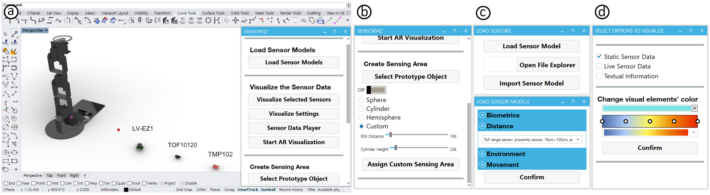
Figure 2: SensorViz user interface. (a) and (b) are the SensorViz main window. (b) Users can select the shape, size, and distance for the target sensing area. (c) Users can select and import sensor models in the list. (d) Users can select the visualization mode for static, real-time, textual, and color of the visualization.
SensorViz (Figure 2) is a visualization tool that supports novice makers during the diferent stages of prototyping with sensors by visualizing sensor data alongside the prototype geometry, both in a digital 3D editor and via an AR overlay. Makers defne the position of their sensors by placing them onto the 3D model of the prototype. When makers change either the model or the sensors, they see the sensor visualization update in real-time, which allows for interactive exploration and fast design iteration to decide which sensors to use, how to lay them out, and how to adjust the model geometry.
Visualizations for Diferent Stages of Prototyping with Sensors
SensorViz is designed to support makers through three types of visualizations for diferent stages of prototyping with sensors.
Sensor Specifcations from Datasheet:
At the beginning of the prototyping process before makers buy sensors, SensorViz helps them to explore which sensors are most suitable for their prototype, how many they need, and where to place them by visualizing information from the sensors’ data sheets, such as the min/max range, feld of view, and resolution, in the 3D editor together with the prototype. Makers only have to select the sensor from the SensorViz database to load it into the 3D editor and see its sensor visualization. When makers change the position of the sensor on the virtual prototype, the visualization automatically updates in real-time. SensorViz also displays how well the sensors cover a specifed sensing area. Makers defne the area they want to sense; SensorViz then computes the intersection of the sensors’ feld of view with the area. While makers often have to guess the sensor’s capabilities from abstract schematics and tables in its datasheet before buying the sensor, SensorViz ofers a 3D visualization directly from the datasheet that enables makers to get a spatial understanding of the sensor’s range and functionality in the early stages of prototyping.
Sensor Data Overlay over the Physical Prototype via AR:
To support makers in evaluating their prototype in context before physically building it, SensorViz provides an AR overlay that can be displayed using either a tablet, smartphone, or head-mounted AR display (e.g., HoloLens). Makers start by opening the AR application (Fologram [13]) on their AR device. In the SensorViz UI, makers then select the ’Start AR’ option to generate a QR code. The QR code can then be scanned with the AR application to synchronize the mobile AR device with the computer to start streaming data from SensorViz. The AR overlay shows the virtual prototype, the virtual sensors, and the corresponding sensor visualization. To ensure the correct size of the prototype and sensor visualization in AR, the AR application has a built-in feature to detect the size of objects in the environment and then scales the prototype in AR accordingly. To position the prototype in AR, the AR application automatically detects the ground plane in the environment, which SensorViz then sets to be equal to the ground plane in the 3D editor. The AR overlay is synchronized with the 3D editor, i.e., changes in the 3D editor are refected in the AR overlay in real-time. Makers can toggle the visualization of each sensor on or of through the AR interface. Once makers fabricate the prototype and buy the sensors, they can use the AR overlay to help with assembly: The position of sensors is shown in the AR overlay, makers thus only have to align the physical sensors with the virtual sensors to create a matching physical sensor layout.
Live and Recorded Sensor Data Visualization:
To support makers in testing if their physical prototype works, SensorViz provides makers with functionality to visualize live data. Makers download the custom Arduino code (.ino) from the SensorViz editor and then upload it to an Arduino board connected to the sensor. Makers then select the sensor in SensorViz and choose the port from which the Arduino is streaming the sensor data. When SensorViz receives live data through the port, it visualizes it. SensorViz also allows makers to record data frst before visualizing it. This can be useful for prototypes for which data collection may take a long time or that require data collection in the wild where makers do not have access to the 3D editor. To record sensor data, makers prepare the sensor using the same steps as for live data but use the ’record data’ button in the SensorViz data recorder, which is implemented as a separate program that can run on a portable computer (Raspberry Pi). The recorded data is then saved as a fle. Makers can then replay the recorded data using SensorViz to see it visualized. By replaying diferent parts of the data, makers can test how well the prototype works across diferent interaction scenarios.
The three visualizations support makers in the diferent stages of prototyping with sensors from exploring which sensors to use and how to lay them out before building the prototype, to further refning the sensor layout while visualizing the prototype in AR in the context in which it will be used, and fnally streaming live data or collecting recorded data to verify that the prototype works as intended.
Prototyping Walkthrough
We next illustrate SensorViz’s visualizations through the example of prototyping a wind chime in the form of a bird that hangs from a tree. We want to create a wind chime that uses changes in wind speed and wind direction to modulate sound; further, when a person is walking close to it (within 1.5 meters), it should play a special melody. The wind chime should also sense temperature, which we will display on an LED. We chose this example for our walkthrough since our target users are novice makers, such as students in an introductory electronics class who build simple prototypes. For instance, 300 students in our class used on average 2.38 sensors across 72 group projects. Schemaboard [18] also showed that 5,083 making projects used a median of 7 components, which included not only sensors but also buttons. The fnal prototype from our walkthrough has 6 sensors, which matches the complexity of the prototypes found in the study.
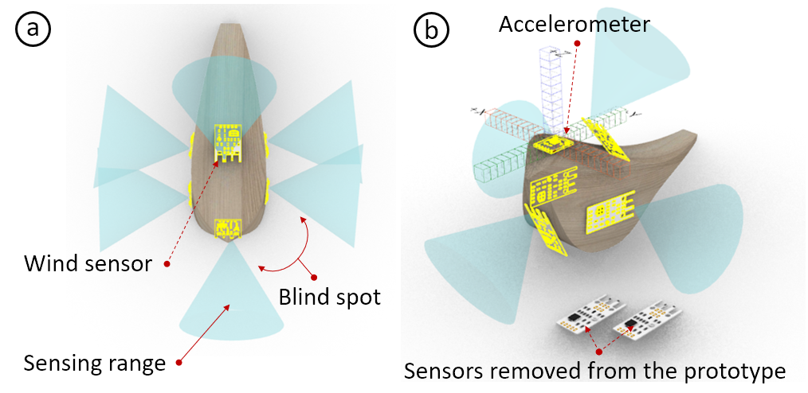
Figure 3: Placing sensor models and visualizing sensing range. (a) We place six wind sensors on the wind chime geometry, but still have blind spots. (b) We thus decide to remove two wind sensors and add an accelerometer to detect overall motion.
Trade-Of Between Diferent Sensors:
We utilize wind sensors to sense wind speed and wind direction. In the SensorViz toolbar, we see that the wind sensor has a 60° feld of view. Since we want to sense wind from any angle (360°), we select 6 wind sensors. We turn on the datasheet visualization, which shows each sensor’s feldof-view, and use it to determine where to place the wind sensors to avoid overlapping sensing areas. We fnd that the geometry of the wind chime does not allow us to place the sensors to achieve full coverage (Figure 3a). We modify the geometry of the wind chime but fnd it compromises the aesthetics too much. We therefore decide to use only 4 wind sensors, one for each cardinal wind direction, and to compensate for the ’blind spots’ with an accelerometer that will detect motion caused by diferent wind speeds (Figure 3b).
Comparing Diferent Sensor Resolutions:
When selecting the accelerometer, we see that there are three options: 0.01/mG, 0.4/mG, and 0.6/mG sensing resolution. Since we want the wind chime to be sensitive to even minor movements when the wind blows, we choose the accelerometer with the highest resolution. We then place the accelerometer onto a free spot on the wind chime.
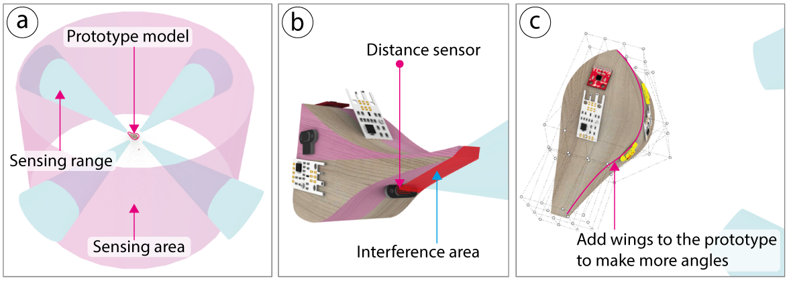
Figure 4: Visualizing sensing area coverage and interference: (a) Visualized sensing range and target area in SensorViz. (b) Finding overlaps between sensing range and prototype object. (c) Modifying prototype geometry to add angled surfaces for mounting the sensors in a tilted position.
Ensuring Sensing Area Coverage:
Next, we choose a set of distance sensors to detect if a person is walking within 1.5 meters. Before positioning the sensors, we create a new sensing area around the wind chime by toggling on the ’Create Sensing Area’ button. We select the cylinder from the list of sensing volumes and set its scale to a radius of 1.5m. As soon as we place each distance sensor on the wind chime, SensorViz visualizes which part of the sensing area each distance sensor covers (Figure 4a).
Modifying Prototype Geometry:
While positioning one of the distance sensors, we notice that the wind chime geometry, i.e., the bird’s tail, interferes with its feld of view (Figure 4b). To solve this issue, we frst bend the bird’s tail upward and then also curve the geometry by adding wings to the bird (Figure 4c), which allows us to tilt the distance sensor to avoid interference. We encounter a similar issue when placing the temperature sensor. We want to place the temperature sensor under the bird’s tail to completely cover it to avoid direct sunlight. However, we notice that the tail is too narrow to fully cover the sensor. We therefore make the tail wider. To fnalize our prototype, we also add a speaker for playing the sounds and an LED that we will use to display temperature.
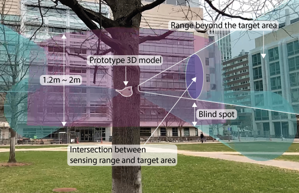
Figure 5: The AR visualization of our virtual wind chime hanging on the tree shows that the distance sensors cover would only detect adults and not small children walking by.
Visualizing Virtual Prototype in Physical Context:
Before we fabricate the wind chime, we visualize what its sensors can sense via AR in the context of the tree onto which it will be hung. We frst change the position of our wind chime in the 3D editor to be at the level of the tree branch (1.5m). We then use our handheld tablet, open the AR application, and scan the QR code generated by SensorViz to sync our tablet with the SensorViz 3D editor. We hold our tablet up in front of the tree and confrm the detected ground plane, which then positions our wind chime at the height of the branch. Based on the AR visualization, we see that we need to adjust the angle of the distance sensors to point them further down to be able to also detect children within the sensor’s feld of view (Figure 5). We make the changes in SensorViz and confrm via AR that the sensing coverage is now appropriate.
Mounting Physical Sensors Based on Virtual Sensor Positions:
After 3D printing the wind chime, we move on to mount the physical sensors onto the 3D printed prototype. We take each physical sensor and align it with the matching virtual AR sensor overlay.
Using Live Data:
After we assemble the wind chime, we want to verify that it works as intended by interacting with it and visualizing the live data from the sensors. We frst upload the code for the sensors onto a microcontroller and then select the port for streaming data in SensorViz. We then hang the wind chime outside onto the tree and walk around it. Since there is no wind, we blow air onto the wind chime from diferent directions. The distance sensors and wind sensors record data as expected, but we notice that the accelerometer values do not change much.
Using Recorded Data:
Since we are unsure if the accelerometer behaves diferently when the wind chime is exposed to actual wind rather than us blowing air on it, we decide to record sensor data for a full day using the SensorViz data recorder. Replaying the data later confrms that the accelerometer does pick up on the wind as intended. The recorded data also shows that the wind is coming mostly from two directions. We therefore take a note that for another prototype iteration, we will remove the other wind sensors to save cost and reduce the complexity of wiring.
LIBRARY OF VISUALIZATION PRIMITIVES
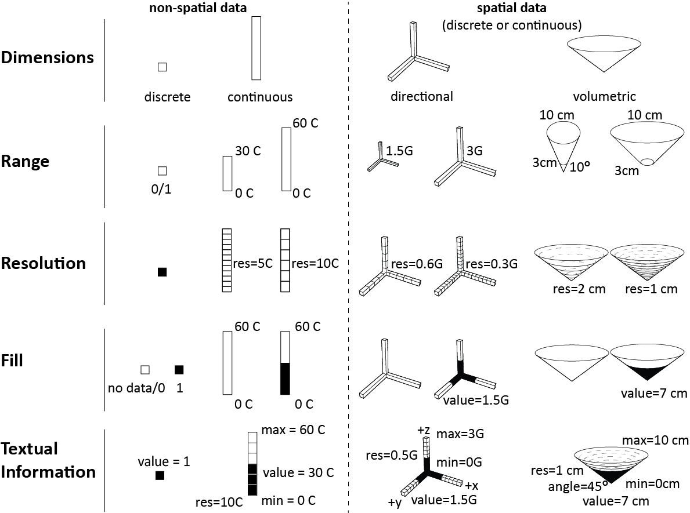
Figure 6: To visualize sensor information in a coherent manner, we created a library of visualization primitives. These primitives represent non-spatial and spatial data using attributes such as dimensions, range, resolution, fll, and textual information.
To visualize sensor information in a coherent manner, SensorViz contains a library of visualization primitives (Figure 6) that can be composed into more complex visualizations for various sensors.
Dimensionality:
We represent discrete data as a point and continuous data as a bar. We represent directional data as bars in diferent directions. For volumetric data, we display the data as a 3D volumetric shape (e.g., a cone or hemisphere). Dimensional information is rendered as a black outline with no infll.
Range:
To visualize the range of a sensor, we use the min/max values from the datasheet as the bounds of the visualization. For continuous non-spatial and directional data, we defne the lower bound of the visualization to be equal to the minimum value and the upper bound of the visualization to be equal to the maximum value specifed in the datasheet. Thus, as a result, the bar of a temperature sensor with a range of 0-30°C is half as long as for a sensor with 0-60°C. To ensure that the visualization is not too large and obstructing the view, SensorViz applies a scaling factor to the length of the bar that by default is the same for all sensors with the same measurement unit (e.g., a scaling factor of 0.1 for °C leads to visualizations of 3cm for 0-30°C and 6cm for 0-60°C). Makers can override the default scaling factor as needed. For spatial data, the visualization shows the lower and upper bounds of the sensing volume in the size as specifed in the datasheet.
Resolution:
We visualize resolution by splitting the bar or volume into segments, with smaller segments representing higher sensor resolutions than larger segments. We compute the segment size by dividing the sensor’s output bit resolution by the range of the sensor. For instance, a 12-bit temperature sensor with 4096 diferent values for its sensor readings and a sensing range from -55 to 150°C has a resolution of 205/4096°C = 0.05°C. To ensure that the segments have an appropriate size in the visualization, SensorViz applies a scaling factor that by default is the same for all sensors that use the same measurement unit (e.g., a scaling factor of 2 for °C leads to visualizations with 40 segments (2/0.05) for the 12-bit sensor). Makers can override the scaling factor as needed.
Sensor Values:
We visualize live sensor values by flling in the point, bar, or volume. For discrete values, if a ’zero’ is read, the point is rendered in 0% opacity and if a ’one’ is read, it is rendered in 100% opacity. Makers can diferentiate between a ’zero’ reading and ’no data’ using the text label that shows the current value. For continuous values, the larger the received sensor values, the more of the bar or the volume is rendered in 100% opacity.
Textual information:
We use labels to display the range (min/max), the resolution, and the current sensor value. For directional data, we also label the axes information, and for volumetric data, we label the angle of the feld of view. Makers can choose in the user interface which information they want to display.
Additional Visualizations Attributes
In addition to the basic visualization primitives, SensorViz ofers additional visualizations to support makers.
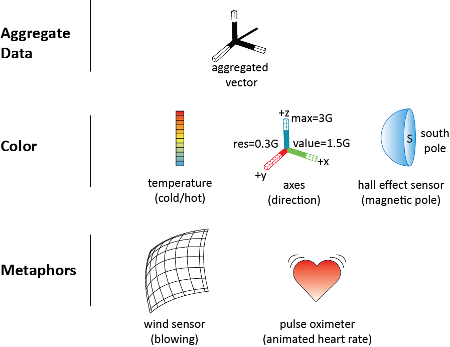
Figure 7: In addition to the visualization primitives, SensorViz also supports makers with additional visualization attributes, such as aggregate data, color, and metaphors.
Aggregate Data:
Many sensors measure multiple sensor values, which when aggregated provide higher-level information. For instance, accelerometers provide three separate values for acceleration in x, y, z but for many use cases seeing the aggregate value, i.e., the orientation in which the object is actually moving, is more helpful. SensorViz therefore provides a visualization that combines the three individual axis measurements into one directional vector.
Color Coding:
Where appropriate, SensorViz uses color to facilitate makers’ understanding of the sensor data and to help makers avoid mistakes. For instance, for temperature sensors, SensorViz colors the sensor data in blue for low temperatures and in red for high temperatures. To reduce potential mistakes when makers use digital hall efect sensors, SensorViz colors them in blue because they can only detect the red South pole of magnets. Finally, to prevent makers from confusing axes when prototyping with accelerometers, SensorViz colors the axes using the common coloring scheme of red for the x, green for the y, and blue for the z-axis.
Metaphors:
Finally, metaphors can help makers assess what a sensor is for and if it works as expected. In SensorViz, makers have the option to activate metaphors for certain sensors to visualize high-level behavior. For instance, wind sensors in SensorViz are visualized as a sail that blows in the wind when sensors report data, and pulse oximeters are visualized as a beating heart.
Composition of Visualization Primitives
Using the visualization primitives, SensorViz can represent various types of sensors.
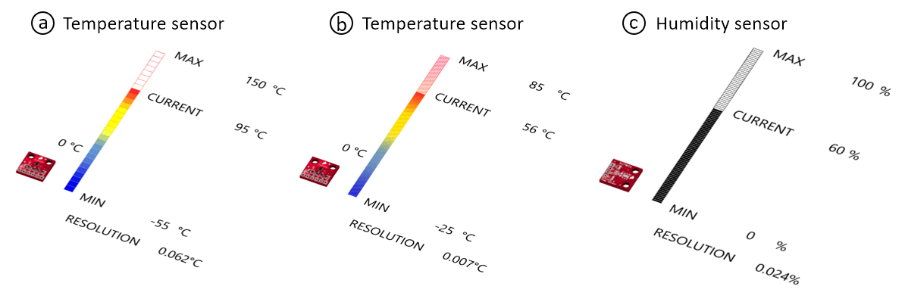
Figure 8: Composition of sensor data visualization for non-spatial sensors: (a,b) Two diferent temperature sensors, (c) humidity sensor.
Non-Spatial Sensors (Temperature/Humidity):
Figure 8 shows the visualization of diferent non-spatial sensors, such as temperature and humidity sensors, all using the same visualization primitives. Since the analog data of the sensors is non-spatial, SensorViz represents it as a bar. Each sensor’s bar is split into a number of segments based on the resolution of the sensor data. The incoming sensor signals are represented as opaque areas on the bar. The min/max values of the sensor and the currently read values are added as text labels to the bar. The humidity sensor uses the default visualization, i.e., displays sensor data in black (Figure 8b), while the temperature sensor data is colored in blue/red for cold/hot temperatures (Figure 8a).
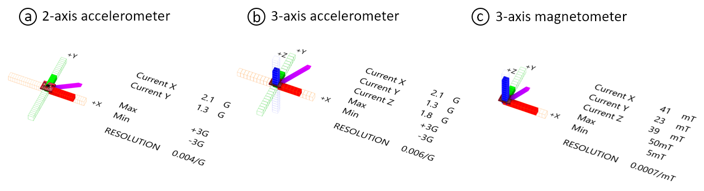
Figure 9: Composition of sensor data visualization for directional sensors: (a) 2-axis accelerometer, (b) 3-axis accelerometer, (c) 3-axis magnetometer.
Directional Sensors (Accelerometers/Magnetometers):
Figure 9 shows the visualization of diferent directional sensors, such as 2axis and 3-axis accelerometers and magnetometers, all using the same visualization primitives. The analog data for each of the axes is represented as a bar pointing in the direction from which the data is retrieved. Each axis is split into a number of segments based on the incoming data. The incoming sensor signals are represented on each axis as opaque overlays. The axis information (x,y,z), min/max possible readings, and the currently read value are added as text labels to the visualizations. The combined data is shown as an aggregate vector and each axis is colored based on its direction.
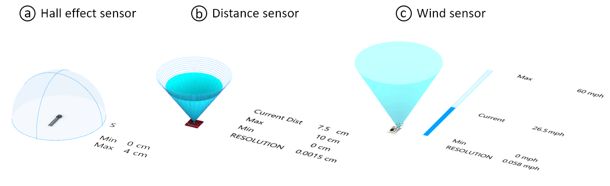
Figure 10: Composition of sensor data visualization for spatial sensors: (a) hall efect sensor, (b) distance sensor, (c) wind sensor.
Volumetric Sensors (Hall Efect, Distance, Wind Sensor):
Figure 10 shows diferent types of volumetric sensors, i.e., a hall efect, distance, and wind sensor. All sensors are represented with sensing volumes, i.e., the hall efect sensor as a sensing hemisphere, and the distance and wind sensor as sensing cones. For the hall efect and the distance sensor, the incoming data is visualized directly on the sensing volume, i.e., for the discrete hall efect sensor the hemisphere is either opaque or translucent (Figure 10a), and for the analog distance sensor the cone is made opaque up to the level of the sensor value (Figure 10b). While by default, the data from the wind sensor is also visualized on the cone, we override the default and display it as a bar since the amount of wind is non-spatial and thus does not refer to a specifc distance from the sensor. The angle or radius of the sensor, min/max, and the currently read value are added as text labels to the visualizations. The hall efect sensor is colored ’blue’ to show that it only senses the ’red’ South pole.
Sensor Database Builder
Sensor visualizations are automatically created based on the information about each sensor in the SensorViz sensor database. The database currently has 19 sensors, which correspond to common sensors used by novice makers (i.e., 300 students in our class used only 19 diferent sensors across 72 group projects although they could buy any sensor). All the sensors in the database are saved in a single file (.json). The file also contains a reference to the program (.ino) that is uploaded to an Arduino connected to the sensor for live data visualization.
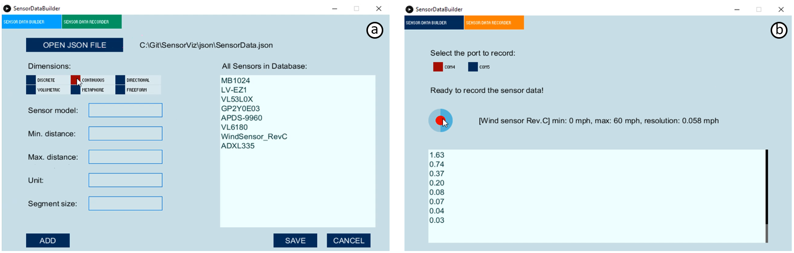
Figure 11: Sensor Database Builder: (a) Adding information from the datasheet. (b) Recording sensors’ live data.
Sensor Database Builder:
To facilitate adding new sensors, we built a sensor database builder (Figure 11a). It is targeted at expert makers who are able to understand the information from the datasheet and supports them populating the database by specifying the require data that should get extracted from the datasheet. Once a maker added a sensor to the database, it becomes available in the SensorViz 3D editor. The sensor database can be shared with other makers by copying the .json file that contains all sensors and the .ino files that contain the code for each sensor. We next describe in more detail how expert makers can use the sensor database builder to add new sensors to SensorViz:
Adding Information from the Datasheet:
To add a sensor to the SensorViz database, makers have to defne if the sensor is a discrete/continuous sensor, if it contains directional information (x,y,z) or senses a volume (i.e., has an angle for its feld of view). In addition, makers have to specify the range of the sensor data, the resolution of the sensor, and which textual information should be displayed. Furthermore, they need to specify if color coding should be used and if they want to provide a custom metaphor.
Automatically Generated Visualization:
Once the maker saves the information, SensorViz automatically adds the sensor to the .json file and afterwards shows the sensor in the SensorViz sensor list. When makers load the sensor into the 3D editor, the visualization is automatically created by matching the information from the database to the visualization primitives. For the sensor’s 3D model, SensorViz frst searches its 3D model collection and if the sensor is not available, it uses a default sensor model. Makers can also specify a sensor 3D model file in case they have it available.
Writing the Code for Live Data Visualization:
Makers can extend the visualization of the new sensor to include live data (Figure 11b). For this, makers frst have to write the code for the sensor using SensorViz’s code template (.ino). The template contains a returnSensorData() function, which prints the live sensor data to the serial monitor, allowing SensorViz to retrieve the data. When printing data to the serial monitor, makers need to prefx the sensor data with the attribute name from the .json file. Using this convention, both raw sensor values and aggregate data can be reported back to SensorViz. If sensors have multiple variables (accelerometer), SensorViz uses a ‘,’ as data separator. Once makers upload the program, the live data visualization for the new sensor becomes available in SensorViz.
IMPLEMENTATION
Figure 12 shows the SensorViz system workfow. SensorViz builds on the MorphSensor 3D editing environment [36] in Rhino3D and is implemented as a Grasshopper plugin. To show SensorViz visualizations in AR, we use the Fologram plugin for Rhino3D. Our sensor data recorder is implemented as an executable fle that can run on a portable computer (Raspberry Pi). The sensor database builder is implemented in Processing.
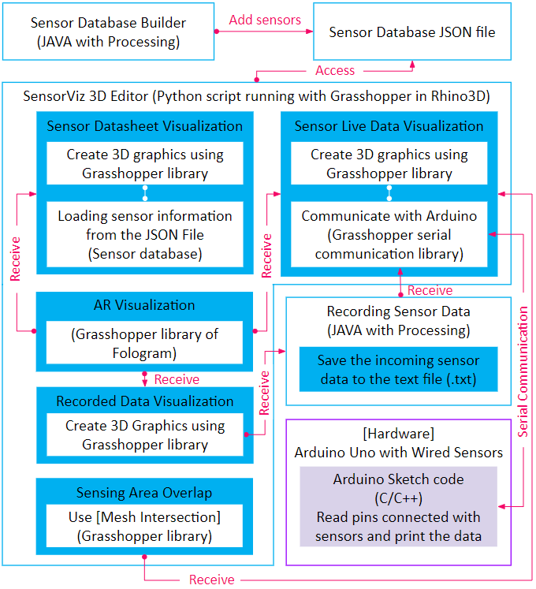
Figure 12: SensorViz system workfow.
Loading Sensor Information from Sensor Database:
When makers open the SensorViz editor, SensorViz retrieves all the sensor information from the SensorViz sensor database by parsing the JSON fle. It also retrieves the sensor 3D model by matching the 3D model name in the JSON fle with the sensor model titles in the Sparkfun 3D Model Component Library [26].
Visualizing Sensor Data:
After loading the sensor specifcation, SensorViz creates the visualization by matching the sensor attributes with the visualization primitives. To position non-spatial data next to the sensor, SensorViz retrieves the 3D model’s center and then ofsets the visualization accordingly. To position spatial data, such as sensing volumes, in the direction the sensor is facing, SensorViz retrieves the normal vector of the plane of the sensor model. This information is provided by the Sparkfun 3D model library and always faces forward relative to the orientation of the sensor. To compute how to segment the visualization according to the sensor resolution, SensorViz frst computes the sensor’s resolution as described in section ’Visualization Attributes’ and then maps it onto the bar or volume. To visualize the current sensor value, SensorViz creates an additional geometry on top of the existing visualization primitive and sets its height to be the current sensor value and its appearance to be opaque. SensorViz displays text as 3D text labels and places them at diferent ofsets from the sensor’s center, based on the type of label. To color a visualization, SensorViz connects the geometry of the visualization to the ’Gradient’ attribute in Grasshopper. To visualize metaphors, SensorViz takes as input a custom 3D geometry and then connects it to an animation that is driven by the sensor value.
AR visualization:
To start the AR visualization in Fologram [13] from the SensorViz user interface, we wrote a custom python script. To visualize sensor data from Grasshopper in AR, SensorViz connects each visualization primitive’s geometry to Fologram’s ’Sync’ module. Using ’Sync,’ Fologram then transfers each change in the 3D editor to the AR overlay in real-time.
Reading Live Sensor Values:
To receive live data from the microcontroller, SensorViz uses Grasshopper’s Firefy plugin, which reads data from the serial monitor. Once data is incoming, SensorViz analyzes its prefx and then connects it to the corresponding attribute in the sensor’s visualization. Finally, SensorViz connects the attribute to the geometry of the visualization primitive to display the changing data values.
Recording Sensing Data:
When data needs to be recorded, SensorViz writes the incoming sensor values into a text fle (.txt) together with a timestamp of when the data was received. To visualize the recorded data later, SensorViz reads the text fle and visualizes the sensor data at the recorded time intervals.
Sensing Area Overlap:
To compute how much a sensor’s feld of view and the sensing area overlap, SensorViz iterates over all sensors and uses Grasshopper’s mesh intersection function to determine the amount of coverage.
USER STUDY
We conducted a user study to understand how SensorViz’s visualization can help makers during the diferent stages of prototyping with sensors. We compared prototyping with the SensorViz visualizations (datasheet visualization, AR overlay, live data visualization) to a baseline condition, in which the SensorViz editor was provided but all visualizations were turned of and the participants had access to the sensors and their datasheets.
Participants:
We recruited twelve novice makers, 10 male and 2 female, aged 24-30 years (M=26.8, SD=2.3), who are students with industrial design backgrounds from our institution. All of them had some experience prototyping with sensors, i.e., had completed 2-5 previous projects but did not consider themselves experts. Participants were compensated with 10 USD in local currency.
Conditions:
In the SensorViz condition, participants were given the SensorViz 3D editor with all visualizations enabled, i.e., they were able to access the datasheet visualization, sensor data overlay over the physical prototype via AR, and live data visualization. In the baseline condition, participants were given the SensorViz editor with all visualizations turned of. In both conditions, participants were able to place digital sensor 3D models on the virtual prototype geometry. The study was run as a between-subjects study, and participants were randomly assigned to a condition.
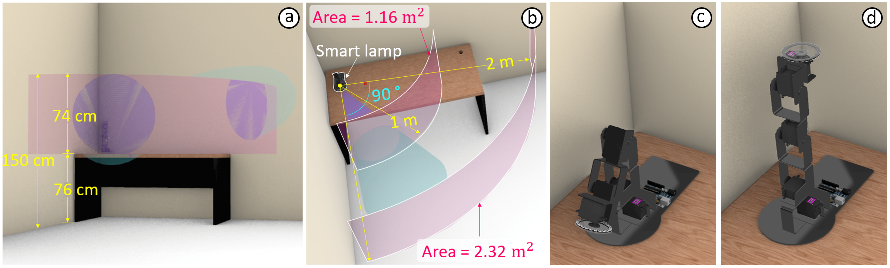
Figure 13: SensorViz evaluation study setup: (a) sensing area within a range of 76cm 150cm height. (b) the lamp senses the area towards the front and right side (90 degrees). (c) the lamp’s initial shape before sensing the user. (d) the lamp orients itself to the user when the user is within 2 meters to the lamp.
Task:
Participants were asked to build a smart lamp that can automatically turn on/of and direct its light toward the user. The lamp we gave participants already consisted of a robotic arm as the stand to orient the light and a ring-shaped LED strip for turning on/of the light. Participants were asked to extend the prototype to add four features: (1) the lamp orients itself to the user when the user is within 2 meters to the lamp, (2) the lamp lights up when the user is within a distance of 1 meter to the lamp, (3) the lamp gets brighter when the room gets darker, and (4) the light color changes according to the temperature in the room. To avoid falsely detecting the table, we asked participants to augment the lamp to sense within a range of 76cm-150cm height (Figure 13a). In addition, since the lamp was sitting on a desk that was in a corner of a room, it only needed to sense the area towards the front and right side (90 degrees) (Figure
13b). For prototyping their solution, participants were asked to determine the best sensor layout, i.e., the layout that used the fewest sensors and had the best coverage. We provided participants with six diferent distance sensors (APDS-9960, GP2Y0E03, LV-EZ1, TOF10120, VL53l0X, and VL6180),a temperature sensor (TMP102), and a photoresistor (CdS-5528). To refect the diferent prototyping stages, we frst simulated selecting sensors before buying them and before having them physically available. For this, the control group had access to regular datasheets and the SensorViz group had access to the SensorViz datasheet visualization. After this, we simulated that the sensors had arrived and participants were now allowed to physically place sensors and access the live data visualization on the Serial monitor (control group) or for the SensorViz group inside the SensorViz editor and via AR overlay. Participants decided how they wanted to split their time between using the digital 3D editor and building the physical prototype. For the fnal deliverable, we asked participants to mirror their fnal design both on the digital and the physical prototype.
Resources:
Participants in both conditions were provided with datasheets of each sensor. In addition, participants were allowed to search for information on the internet. For digital prototyping, we prepared a digital scene with the 3D model of the lamp on a table set up against the corner of a room that mirrored the physical setup. We also provided the eight diferent sensors in the SensorViz editor. For physical prototyping, we provided the physical lamp and the eight diferent sensors, three copies of each in case participants needed multiple sensors of the same type. The sensors were already wired to one microcontroller each (Arduino Uno) and had the code uploaded for providing both live data in the SensorViz editor and alternatively the Arduino serial monitor. To see multiple sensors’ data at the same time, all Arduinos were connected simultaneously to a USB hub and participants were able to see the live data of each sensor by selecting the serial port for each Arduino. In the SensorViz condition, participants used a tablet in case they wanted to visualize sensor data via AR.
Study Procedure:
We gave participants a short introduction to the editor they were using in their assigned condition and showed them the available resources. We explained the task with a picture that showed the target sensing area. Participants then built their prototypes for up to 120 minutes. Participants were allowed to end the task anytime they were satisfed with their prototype. At the end, we conducted a 30-minute semi-structured interview. The experiment took 2.5 hours.
Data Collection:
To design and prototype interactive objects, makers iterate between exploring, implementing, and testing. We collected data about the time efciency of prototyping to evaluate if SensorViz enhances the prototype’s quality by helping makers to prototype faster, which allows them to produce more iterations in the same amount of time. Referencing evaluation factors presented in previous works [16, 17], we measured task completion time, time spent for selecting sensors, and the number of times participants switched sensors during the prototyping process. Participants were allowed to exchange sensors throughout the prototyping process until they found the best sensor layout for the task. We also collected every participants’ digital 3D model and documented the sensor layout on the physical prototype. To evaluate how well the sensor layout covers the target sensing areas (i.e., at 1m distance and 2m distance from the lamp), we compute the coverage of each of the two sensing areas in ㎡ using the position of the sensors in the digital editor. We also measured if the placement of the light sensor picked up only the ambient light or was infuenced by the lamp light, i.e., if the light sensor had the same value independent of the lamp being on/of. Finally, we measured if the temperature sensor picked up only the heat from the room or also heat generated by the LED light ring of the lamp and the motors from the robotic lamp stand.
Quantitative Results:
We analyzed the raw data using one-way ANOVA tests followed by Bonferroni correction post hoc analysis with >=0.05. Results are shown in Figure 14.
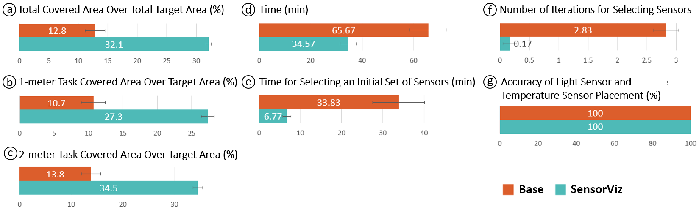
Figure 14: SensorViz study results: Overlap of sensing area with the sensor’s feld-of-view in (a) total, (b) 1-meter task, and (c) 2-meter task. Self-assessed (d) completion time and (e) initial sensor selection time. (f) Shows the number of iterations for selecting sensors and (g) the accuracy of the light sensor and temperature sensor placement.
Prototyping Speed: All participants completed the task within 120 minutes. Overall, participants in the SensorViz group were faster than the baseline group with an average completion time of 34m 34s (SD: 10m 57s) versus 1h 5m 40s (SD: 25m 21s) (F(1,10) = 7.61, p < 0.05) (Figure 14d). For selecting an initial set of sensors to start the frst prototyping round, participants in the SensorViz group were also faster than the baseline group with an average of 6m 46s (SD: 3m 27s) versus 33m 50s (SD: 21m 53s) (F(1,10) = 8.95, p < 0.05)(Figure 14e).
Number of Iterations for Selecting Sensors: Participants in the SensorViz group needed to iterate less on which sensors to use, i.e. they replaced 1 sensor (M = 0.17, SD = 0.41) vs. the baseline group replaced 17 sensors (M = 2.83, SD = 0.75) (F(1,10) = 58.18, p < 0.001) (Figure 14f).
Coverage of Sensing Area: We measured the coverage of the two sensing areas (1 meter, 2 meters) with the distance sensors. In the 1-meter distance task (Figure 14b) where the target sensing area was 1.16㎡, the SensorViz group had 27.34% coverage (M = 0.32㎡, SD = 0.04㎡) which is signifcantly better compared to the baseline group which had coverage of 10.74% (M = 0.13㎡, SD = 0.07㎡) (F(1,10) = 37.09, p < 0.001). This was also true for the 2-meter task (Figure 14c) where the target sensing area was 2.32㎡ with signifcant diferences for the SensorViz group which had coverage of 34.49% (M = 0.8㎡, SD = 0.08㎡) vs. baseline group which had coverage of 13.79% (M = 0.32㎡, SD = 0.15㎡) (F(1,10) = 48.13, p < 0.001). Thus, overall, SensorViz participants achieve a target sensing coverage of 32.1% vs. the baseline which achieved 12.8% (Figure 14a).
Number of Sensors: Though we did not restrict the number of sensors that participants could use, all the participants used the same number of sensors. Participants have used two sensors for the 1meter task, two sensors for the 2-meter task, a temperature sensor, and a photoresistor.
Placement of Light Sensor and Temperature Sensor: We found that there was no diference in how accurately participants in both conditions placed the light and the temperature sensor. In both conditions, for all participants, the light sensor did not pick up any of the lamp light and the temperature sensor did not pick up any of the heat from the motors or the lamp (Figure 14g).
In summary, for the spatial distance sensors, SensorViz participants achieved 252% higher coverage as in the baseline condition (254.5% for 1 meter, and 250.1% for 2 meters), but for the non-spatial light and temperature sensors, there was no diference between SensorViz and the baseline. Finally, participants who used SensorViz placed sensors 190% faster than the baseline condition.
Qualitative Results:
We analyzed our post-study interviews by transcribing the audio/video recordings (total: 3 h 35 min material) and then conducting open and axial coding. In the semi-structured interviews, we asked participants to refect on their prototyping process, i.e., what was the most challenging part and how they overcame the difculties. We also inquired about the use of each of the provided visualizations and other provided resources.
Simplifying the prototyping process by minimizing trial and error: Participants in the SensorViz group highlighted that SensorViz helped them to reduce the number of iterations on the physical prototype. For instance, P11 stated: “in the process of choosing a location, we can [...] virtually attach the sensor and test it, so it can greatly reduce the [physical] prototyping process that actually takes the most amount of time.” Similarly, P2 stated: “before testing the sensor, the process to look at the document [data sheet] and choose it is long, and trial-and-error happens, but I think this [SensorViz] will allow trial-and-errors to decrease a lot.”
Preventing Late Model Changes: Participants pointed out that it was helpful that they were able to modify the prototype geometry in the 3D editor while also seeing the sensor information. Participants noted that this feature was particularly useful to decide on sensor placement “before the prototype’s shape is fnalized” (P5) and that “placing the sensor and editing the model early on” (P5) helped to prevent further changes down the line when the prototype was already 3D printed. Another participant said “it was good that in the beginning of prototyping [...], we could edit the model while looking at the sensor location” (P7).
Benefcial to collaborative prototyping: Participants (P10, P11) also reported SensorViz could aid makers in collaborating with others, saying: “working with a team, we could end up dividing the hardware and model designs. But with this [SensorViz], we do not have to wait until the hardware is made, so it is helpful that we could try modeling frst by visualizing the sensor in the software” (P10). P11 noted: “When collaborating, there are many times, especially when sharing the work of making the hardware, when you have to wait for the rest of it to be complete, but for this [SensorViz] it was good that none of that was necessary and we could try it immediately.”
Advantages of diferent sensor visualizations during prototyping: Participants mentioned that SensorViz’s visualizations aided them in various ways in the prototyping process. P8 and P11 noted that SensorViz’ datasheet visualization “was helpful [...] because we could see the sensor shape or the [sensing] area directly from the software” (P11) and allowed them to “easily see the blind spots” (P8). P8 also stated that the live data visualization was useful for testing sensors, saying: “In particular, when testing if this really detected in this area, the function that showed the live data showed the space immediately, so it was used very efectively”. Participants who used the AR visualization to place sensors on the physical prototype reported that “It was nice to be able to attach it to the exact location [...] by looking at it using AR” (P7) and suggested using an AR headset instead of the tablet to have both hands free for mounting the sensors: “because it was a tablet, it was uncomfortable to try to attach it [the sensor] with one hand.” Moreover, participants (P2, P8, P11) appreciated that the AR visualization assisted them in testing the sensors in context, saying: “what I liked most was the target area display using AR, which I think was the functionality I used most enthusiastically [...] I see 1 meter after setting it as the target area, and if the sensor detection area covers it or not [...] the test was much easier and precisely controllable” (P8). “Because the detection range is shown by AR, [...] I can check whether there is a collision between the sensor’s FOV and target area [...] accuracy is quite important for shape-changing objects, so this visual feedback was very helpful” (P2).
Archiving the prototyping progress: P5 stated that SensorViz allows users to save the history of their prototyping progress, saying: “since this is a graphic editing tool, it seems like it would be good to archive the work in the middle.”
Non-spatial sensors’ visualization: Participants (P5, P7, P11) reported that the photoresistor and the temperature sensor’s “data is simple enough to use the serial to look at it” (P5), still SensorViz was benefcial because “it is intuitive to have the information foated right above the sensor” (P11). P7 also mentioned the inconvenience of reading data from the serial monitor, saying: “the text moves quickly upward and the diferent sensors show up alternating, so it is sometimes difcult to follow.”
In summary, our user study showed that SensorViz speeded up the prototyping process by minimizing trial and error in selecting and testing sensors. For the non-spatial sensors, though there was no signifcant diference between groups, still participants appreciated displaying the sensor data next to the sensor. Also, there is the opportunity of assisting users in collaborative prototyping and preventing late model changes by enabling users to modify the prototype geometry in the 3D editor while seeing the sensor visualization.
LIMITATIONS AND FUTURE WORK
There are several avenues to further improve SensorViz.
Validating the Design Space with Additional Sensors:
Currently, SensorViz only supports specifc types of sensors (temperature, humidity, distance, hall efect, and wind sensors, as well as accelerometers and gyroscopes). While these sensors are representatives of particular sensor categories (non-spatial, directional, and spatial sensors), adding more sensors will help to further validate the design space of visualization primitives. In addition, although the visualization primitives and visualization have been designed to support the most type of sensors used, the scalability of sensor visualization has not been tested. For future work, we will study the scalability of sensor visualization with our suggested sensor visualization primitives.
Automatically Processing Datasheets:
When makers want to add a new sensor to SensorViz, they currently have to manually transfer the data from the datasheet. For future work, we plan to automatically extract this information from the pdfs of the datasheets.
Manual vs. Automatic Sensor Placement:
We initially considered automating the sensor placement. However, we found that sensor placement is a task that requires user input since it also afects the design of the prototype. While algorithms can suggest optimal placement with respect to sensing coverage, taking aesthetics into account is difcult to automate. Algorithms would also require knowing the fnal object geometry, whereas makers may adjust sensors and object geometry in tandem to achieve the desired design.
Interactivity of AR visualization:
While makers can visualize sensor data in AR and toggle the visualizations of each sensor on/of, adjustments to the sensor layout can only be made through the SensorViz 3D editor. For future work, we will add bidirectional interaction so that changes in AR are refected in the 3D editor as well.
Visualizing Efects of Electronic Components on Sensors:
Electronic components, such as capacitors added to sensors, can change the sensed values. We did not include a feature that shows the combined efect of electronic components since our target users are novice makers. For instance, all students in our introductory electronics class used standalone sensor modules that did not require extra fltering with capacitors.
Simulating Environmental Data:
Our paper focuses on developing sensor visualizations for the diferent stages of prototyping. Since the visualization primitives for the sensors are the same for live data as for simulation, we did not include a simulation feature in our visualization tool. However, a feature for simulating sensor data can be added as future work.
Integrating Circuit Layout Functionality:
Participants in our user study pointed out that they would like to not only place sensors but also to build the entire circuit as part of the editing process. For future work, we will add functionality that allows makers to place the sensors and also build the entire circuit on the 3D geometry (e.g., SurfCuit [32], MorphSensor [36]).
Social Aspects of Prototyping:
Some participants in our formative study mentioned that they frequently asked other makers to solve issues collaboratively while prototyping with sensors. Previous HCI research explored the collaborative aspect for prototyping [6, 30] and we plan to investigate in future work how to support collaborative prototyping with our system by facilitating conversation between makers about various sensor choices and placement options.
CONCLUSION
In this paper, we presented SensorViz, an interactive visualization tool that supports makers with diferent visualizations of sensor data throughout the various stages of the prototyping process. We discussed the results from our formative study with 12 makers that showed makers experience difculties when creating prototypes using sensors. We then demonstrated how SensorViz addresses these challenges by visualizing information from the sensor’s datasheet, overlaying sensor information, and providing live sensor data. We discussed how our library of visualization primitives, together with our sensor database builder, allows makers to add new sensors. We then reported results from our user study that showed that SensorViz signifcantly reduces prototyping time while also enabling makers to place sensors more efectively, in a way that they cover a larger portion of the target sensing area. For future work, we plan to improve the system by automatically parsing datasheets and enabling changes in the sensor layout directly in AR.